一般遺物詞條
- 本頁依遊戲內遺物篩選的「一般」大類分章，各章列出該子分類的全部詞條，包含隨機詞條與固定遺物專屬詞條；分類名稱為本站暫譯。
- 詞條名稱取自遊戲的繁體中文與英文文字；「效果數值與規則」欄的說明譯自 Round Table Codex 遺物資料集的社群詳細說明，數字照原文保留；與遊戲參數（版本 1.03.5）不符的說明改依參數撰寫。原文沒有說明的詞條，遊戲參數能以明確的引用關係給出數值時依參數撰寫說明，其餘能取得數值者直接列出數值，否則標示「未載明數值」。「種類」欄列出詞條出現在哪種遺物：一般、深層，或固定遺物的名稱；分級詞條出現在兩種遺物時，每一行都列出該種遺物的等級。「效果數值與規則」欄最後的「相關能力值」連到能力值頁，依遊戲參數列出詞條改變的能力值，包含提升、降低與條件生效；沒有列出不表示沒有關係。「相關武器、法術與戰技」依遊戲參數的標籤或個別 ID，逐一列出與詞條確定有參數關聯的具名武器、法術與戰技，各自連到武器、魔法、禱告或戰技頁的該項目；標籤未核實、來源分歧與未具名的項目不列出。作用與限制仍以詞條說明為準。武器、法術與戰技名稱引用《艾爾登法環》本篇的遊戲文字，尚未確認與《黑夜君臨》一致；部分戰技名稱由本站依本篇官方簡體中文轉寫，詳見戰技頁。圖示取自 Eldenpedia。
- 「效果數值與規則」欄的小字只列出例外與未核實的規則：多份以倍率相乘、合成方式尚未核實、不同等級不同時生效，以及是否必伴隨負面效果；藍色增益的多份數值相加，不另標示。例如生命力 +1 與生命力 +3 合計生命力 +4，HP 上限 +80；2 個 HP 上限 +10% 為 ×1.21。各詞條的數值只計單一詞條本身，不含與其他詞條合併後的結果；固定增量與百分比效果的計算順序尚未核實。Round Table Codex 遺物資料集、遊戲參數 1.03.5（chillreign 原版快照）、Eldenpedia 遺物效果、Eldenpedia 遺物說明、HP 疊加計算討論
能力值
| 詞條 | 效果數值與規則 | 種類 |
|---|---|---|
| HP 上限 ×1.1。多份以倍率相乘；必伴隨負面效果相關能力值： | 深層 | |
| HP 上限 +100等同生命力 +5相關能力值： | 深海的黑夜深海的暗夜 | |
| FP 上限 ×1.15。多份合成方式尚未核實；必伴隨負面效果相關能力值： | 深層 | |
| FP 上限 +25等同集中力 +5相關能力值： | 智的黑夜智的暗夜 | |
| 精力上限 ×1.12。多份合成方式尚未核實；必伴隨負面效果相關能力值： | 深層 | |
| 精力上限 +10等同耐力 +5相關能力值： | 獵人的黑夜獵人的暗夜 | |
| +1：生命力 +1（HP 上限 +20）。+2：生命力 +2（HP 上限 +40）。+3：生命力 +3（HP 上限 +60）。相關能力值： | 一般 | |
| +1：集中力 +1（FP 上限 +5）。+2：集中力 +2（FP 上限 +10）。+3：集中力 +3（FP 上限 +15）。相關能力值： | 一般 | |
| +1：耐力 +1（精力上限 +2）。+2：耐力 +2（精力上限 +4）。+3：耐力 +3（精力上限 +6）。精力上限 +2／+4／+6來源分歧：Round Table Codex 遺物資料集、Eldenpedia 遺物效果精力上限 +2／+4／+5來源分歧：Eldenpedia 效果總表相關能力值： | 一般 | |
| 力氣 +1／+2／+3相關能力值： | 一般 | |
| 靈巧 +1／+2／+3相關能力值： | 一般 | |
| 智力 +1／+2／+3相關能力值： | 一般 | |
| 信仰 +1／+2／+3相關能力值： | 一般 | |
| 感應 +1／+2／+3相關能力值： | 一般 | |
| +1：受到的削韌 ×0.95。+2：受到的削韌 ×0.9。+3：受到的削韌 ×0.85。多份合成方式尚未核實相關能力值： | 一般：+1、+2、+3深層：+3 | |
| 解開魔法師塔的機關後，FP 上限 ×1.18（每解開一座魔法師塔，以乘算疊加）。相關能力值： | 一般 | |
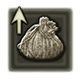 每次打倒小型要塞的強敵，能增加獲得的盧恩、提升觀察力Runes and Item Discovery increased for each great enemy defeated at a Fort | 擊敗小型要塞的強敵後，從敵人獲得的盧恩 ×1.055，觀察力 +16（每次擊敗皆可疊加）。 | 深層 |
| 擊敗大教堂的強敵後，HP 上限 ×1.05（每次擊敗皆可疊加）。相關能力值： | 深層 | |
| 擊敗大型營地的強敵後，精力上限 ×1.075（每次擊敗皆可疊加）。相關能力值： | 深層 | |
| 擊敗遺跡的強敵後，感應 +4（每次擊敗皆可疊加）。相關能力值： | 深層 |
技藝／絕活
| 詞條 | 效果數值與規則 | 種類 |
|---|---|---|
| 縮短技藝的冷卻時間Character Skill Cooldown Reduction | +1：技藝冷卻時間 ×0.95。+2：技藝冷卻時間 ×0.925。+3：技藝冷卻時間 ×0.9。各等級：不適用於隱士、復仇者、執行者。多份合成方式尚未核實 | 一般 |
| 自然累積絕活量表Ultimate Art Auto Charge | +1：絕活量表自然累積速度 ×1.05。+2：絕活量表自然累積速度 ×1.075。+3：絕活量表自然累積速度 ×1.1。多份合成方式尚未核實 | 一般 |
| 打倒敵人時，能累積絕活量表Defeating enemies fills more of the Art gauge | +1：敵人死亡時，獲得 6.5 絕活量表累積量。+1：必伴隨負面效果 | 一般：基本深層：基本、+1 |
| 使出致命一擊時，能累積絕活量表Critical hits fill more of the Art gauge | 基本：使出致命一擊時，獲得 5 絕活量表累積量。+1：使出致命一擊時，獲得 6.5 絕活量表累積量。+1：必伴隨負面效果 | 一般：基本深層：基本、+1 |
| 防禦成功時，能累積絕活量表Successful guarding fills more of the Art gauge | 基本：防禦住攻擊時，獲得 1 絕活量表累積量。+1：防禦住攻擊時，獲得 1.5 絕活量表累積量。+1：必伴隨負面效果 | 一般：基本深層：基本、+1 |
攻擊力
| 詞條 | 效果數值與規則 | 種類 |
|---|---|---|
| 基本：所有來源的物理傷害 ×1.04。+1：所有來源的物理傷害 ×1.05。+2：所有來源的物理傷害 ×1.06。+3：所有來源的物理傷害 ×1.105。+4：所有來源的物理傷害 ×1.12。基本、+1、+2：多份合成方式尚未核實；+3：必伴隨負面效果；+4：多份合成方式尚未核實，必伴隨負面效果相關能力值： | 一般：基本、+1、+2深層：+2、+3、+4 | |
| +2：所有來源的物理傷害 ×1.06。多份合成方式尚未核實相關能力值： | 遼闊的幽靜情景 | |
| 基本：所有來源的屬性（魔力、火、雷、聖）傷害 ×1.05。+1：所有來源的屬性（魔力、火、雷、聖）傷害 ×1.08。+2：所有來源的屬性（魔力、火、雷、聖）傷害 ×1.1。+1、+2：必伴隨負面效果；多份合成方式尚未核實相關能力值： | 深層 | |
| 基本：所有來源的魔力屬性傷害 ×1.045。+1：所有來源的魔力屬性傷害 ×1.055。+2：所有來源的魔力屬性傷害 ×1.065。+3：所有來源的魔力屬性傷害 ×1.105。+4：所有來源的魔力屬性傷害 ×1.12。+3、+4：必伴隨負面效果；多份合成方式尚未核實相關能力值： | 一般：基本、+1、+2深層：+2、+3、+4 | |
| 基本：所有來源的火屬性傷害 ×1.045。+1：所有來源的火屬性傷害 ×1.055。+2：所有來源的火屬性傷害 ×1.065。+3：所有來源的火屬性傷害 ×1.105。+4：所有來源的火屬性傷害 ×1.12。+3、+4：必伴隨負面效果；多份合成方式尚未核實相關能力值： | 一般：基本、+1、+2深層：+2、+3、+4 | |
| 基本：所有來源的雷屬性傷害 ×1.045。+1：所有來源的雷屬性傷害 ×1.055。+2：所有來源的雷屬性傷害 ×1.065。+3：所有來源的雷屬性傷害 ×1.105。+4：所有來源的雷屬性傷害 ×1.12。+3、+4：必伴隨負面效果；多份合成方式尚未核實相關能力值： | 一般：基本、+1、+2深層：+2、+3、+4 | |
| 基本：所有來源的聖屬性傷害 ×1.045。+1：所有來源的聖屬性傷害 ×1.055。+2：所有來源的聖屬性傷害 ×1.065。+3：所有來源的聖屬性傷害 ×1.105。+4：所有來源的聖屬性傷害 ×1.12。+3、+4：必伴隨負面效果；多份合成方式尚未核實相關能力值： | 一般：基本、+1、+2深層：+2、+3、+4 | |
| 近戰攻擊傷害 ×1.06。多份合成方式尚未核實相關能力值： | 安定者的遺志安定的遺志 | |
| 戰技傷害 ×1.15。多份合成方式尚未核實相關能力值： | 安定者的遺志安定的遺志 | |
| 輕攻擊連段或雙手各持攻擊連段的第一擊傷害 ×1.15。多份合成方式尚未核實相關能力值： | 一般深層 | |
| 連續攻擊時，所有來源的傷害分 3 段提升（×1.05、×1.065、×1.09），每段持續 1.5 秒。相關能力值： | 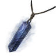 玻璃項鍊 | |
| 致命一擊傷害 ×1.18。多份合成方式尚未核實相關能力值： | 一般深層 | |
| +1：致命一擊傷害 ×1.23。相關能力值： | 爵的黑夜爵的暗夜 | |
| 基本：魔法傷害 ×1.05。+1：魔法傷害 ×1.085。+2：魔法傷害 ×1.1。+1、+2：必伴隨負面效果；多份合成方式尚未核實相關武器、法術與戰技： | 深層 | |
| 基本：禱告傷害 ×1.05。+1：禱告傷害 ×1.085。+2：禱告傷害 ×1.1。+1、+2：必伴隨負面效果；多份合成方式尚未核實相關武器、法術與戰技： | 深層 | |
| 咆哮與吐息傷害 ×1.15。多份合成方式尚未核實相關能力值： | 一般 | |
| 雙手共持時，造成的削韌 ×1.05。多份合成方式尚未核實 | 一般 | |
| 雙手共持時，造成的削韌 ×1.05。多份合成方式尚未核實 | 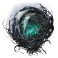 遼闊的幽靜情景 | |
| 雙手各持時，造成的削韌 ×1.05。多份合成方式尚未核實 | 一般 | |
| 雙手各持時，造成的削韌 ×1.05。多份合成方式尚未核實 | 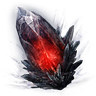 遼闊的火燃情景 | |
| 切換武器時，物理傷害 ×1.1，持續 10 秒。 | 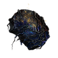 惡兆妖鬼的詛咒物 | |
| 切換武器時，物理傷害 ×1.1，持續 10 秒。 | 王的黑夜 | |
| 附加屬性攻擊力時，魔力、火、雷、聖屬性傷害 ×1.1。多份合成方式尚未核實相關能力值： | 獵人的暗夜王的黑夜金色露珠 | |
| 受到攻擊時，所有來源的傷害 ×1.15，持續 10 秒。相關能力值： | 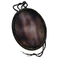 骯髒相框 | |
| 受到攻擊時，所有來源的傷害 ×1.15，持續 10 秒。相關能力值： | 野獸的暗夜 | |
| 受到傷害時，所有來源的傷害 ×1.15，持續 10 秒。（原文註記：待核實觸發此增益的所有方式。）相關能力值： | 一般 | |
| 出現異常狀態量表時，所有來源的傷害提升；參數列出 10 個倍率：×1.035、×1.07、×1.11、×1.155、×1.2、×1.25、×1.3、×1.35、×1.4、×1.45。 | 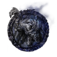 廢棄物之夜 | |
| 攻略封印監牢後，所有來源的傷害 ×1.05（每攻略一座封印監牢，以乘算疊加）。相關能力值： | 一般 | |
| 擊殺黑夜入侵者後，所有來源的傷害 ×1.07（每擊殺一名入侵者，以乘算疊加）。相關能力值： | 一般 | |
| 基本：防禦反擊傷害 ×1.18。+1：防禦反擊傷害 ×1.25。+2：防禦反擊傷害 ×1.29。+1、+2：必伴隨負面效果；多份合成方式尚未核實相關能力值： | 一般：基本深層：基本、+1、+2 | |
| 防禦反擊依自身目前 HP 追加傷害（currentHealthAttackRate 5；社群試算表：目前 HP / 20）。 | 一般深層 | |
| 基本：使用油脂類道具時，武器物理傷害 ×1.1，持續 30 秒。+1：使用油脂類道具時，武器物理傷害 ×1.17，持續 30 秒。+2：使用油脂類道具時，武器物理傷害 ×1.20，持續 30 秒。各等級：原文註記：待核實此效果強化的對象。+1、+2：必伴隨負面效果 | 一般：基本深層：基本、+1、+2 | |
| 提升投擲壺的攻擊力Improved Throwing Pot Damage | 基本：投擲壺傷害 ×1.15。+1：投擲壺傷害 ×1.3。多份合成方式尚未核實相關能力值： | 一般：基本深層：基本、+1 |
| 提升投擲小刀的攻擊力Improved Throwing Knife Damage | 基本：投擲小刀傷害 ×1.15。+1：投擲小刀傷害 ×1.3。多份合成方式尚未核實相關能力值： | 一般：基本深層：基本、+1 |
| 提升使用輝石、重力石道具的攻擊力Improved Glintstone and Gravity Stone Damage | 基本：輝石道具與重力石道具傷害 ×1.15。+1：輝石道具與重力石道具傷害 ×1.3。多份合成方式尚未核實相關能力值： | 一般：基本深層：基本、+1 |
| 強化調香術Improved Perfuming Arts | 基本：調香術傷害 ×1.15。+1：調香術傷害 ×1.3。多份合成方式尚未核實相關能力值： | 一般：基本深層：基本、+1 |
魔法／禱告
| 詞條 | 效果數值與規則 | 種類 |
|---|---|---|
| 魔法、禱告的有效時間 ×1.5。 | 單眼鏡的皮革袋 | |
| 輝劍的魔法傷害 ×1.12。多份合成方式尚未核實相關武器、法術與戰技： | 一般深層 | |
| 挖石的魔法傷害 ×1.12。多份合成方式尚未核實相關武器、法術與戰技： | 一般深層 | |
| 卡利亞劍的魔法傷害 ×1.12。多份合成方式尚未核實相關武器、法術與戰技： | 一般深層 | |
| 隱形的魔法傷害 ×1.12。多份合成方式尚未核實相關武器、法術與戰技： | 一般深層 | |
| 結晶人的魔法傷害 ×1.12。多份合成方式尚未核實相關武器、法術與戰技： | 一般深層 | |
| 重力的魔法傷害 ×1.12。多份合成方式尚未核實相關武器、法術與戰技： | 一般深層 | |
| 荊棘的魔法傷害 ×1.12。多份合成方式尚未核實相關武器、法術與戰技： | 一般深層 | |
| 黃金律法基本主義的禱告傷害 ×1.12。多份合成方式尚未核實相關武器、法術與戰技： | 一般深層 | |
| 王城古龍信仰的禱告傷害 ×1.12。多份合成方式尚未核實相關武器、法術與戰技： | 一般深層 | |
| 巨人火焰的禱告傷害 ×1.12。多份合成方式尚未核實相關武器、法術與戰技： | 一般深層 | |
| 狩獵神祇的禱告傷害 ×1.12。多份合成方式尚未核實相關武器、法術與戰技： | 一般深層 | |
| 野獸的禱告傷害 ×1.12。多份合成方式尚未核實相關武器、法術與戰技： | 一般深層 | |
| 癲火的禱告傷害 ×1.12。多份合成方式尚未核實相關武器、法術與戰技： | 一般深層 | |
| 龍饗的禱告傷害 ×1.12。多份合成方式尚未核實相關武器、法術與戰技： | 一般深層 |
減傷率
| 詞條 | 效果數值與規則 | 種類 |
|---|---|---|
| +1：受到的物理傷害 ×0.895。+2：受到的物理傷害 ×0.88。多份合成方式尚未核實；必伴隨負面效果相關能力值： | 深層 | |
| 受到的物理傷害 ×0.9。多份合成方式尚未核實相關能力值： | 霧霾的暗夜 | |
| 基本：受到的屬性傷害 ×0.94。+1：受到的屬性傷害 ×0.895。+2：受到的屬性傷害 ×0.88。+1、+2：必伴隨負面效果；多份合成方式尚未核實相關能力值： | 深層 | |
| 受到的屬性傷害 ×0.94。相關能力值： | 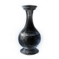 清淨淚滴 | |
| +1：受到的魔力屬性傷害 ×0.85。+2：受到的魔力屬性傷害 ×0.84。多份合成方式尚未核實；必伴隨負面效果相關能力值： | 深層 | |
| 受到的魔力屬性傷害 ×0.9。多份合成方式尚未核實相關能力值： | 一般深層 | |
| +1：受到的火屬性傷害 ×0.85。+2：受到的火屬性傷害 ×0.84。多份合成方式尚未核實；必伴隨負面效果相關能力值： | 深層 | |
| 受到的火屬性傷害 ×0.9。多份合成方式尚未核實相關能力值： | 一般深層 | |
| +1：受到的雷屬性傷害 ×0.85。+2：受到的雷屬性傷害 ×0.84。多份合成方式尚未核實；必伴隨負面效果相關能力值： | 深層 | |
| 受到的雷屬性傷害 ×0.9。多份合成方式尚未核實相關能力值： | 一般深層 | |
| +1：受到的聖屬性傷害 ×0.85。+2：受到的聖屬性傷害 ×0.84。多份合成方式尚未核實；必伴隨負面效果相關能力值： | 深層 | |
| 受到的聖屬性傷害 ×0.9。多份合成方式尚未核實相關能力值： | 一般深層 | |
| HP 偏低時，能提升減傷率Improved Damage Negation at Low HP | HP 低於 [HP 上限 ×0.4] 時，受到的所有來源傷害 ×0.84。多份合成方式尚未核實相關能力值： | 一般深層 |
| 受到損傷並被彈飛時，受到的傷害 ×0.8、受到的削韌 ×0.8，持續 20 秒。相關能力值： | 一般深層 |
異常狀態抵抗力
| 詞條 | 效果數值與規則 | 種類 |
|---|---|---|
| 基本：中毒抵抗力 +75。+1：中毒抵抗力 +110。多份合成方式尚未核實相關能力值： | 一般：基本深層：基本、+1 | |
| 基本：猩紅腐敗抵抗力 +75。+1：猩紅腐敗抵抗力 +110。多份合成方式尚未核實相關能力值： | 一般：基本深層：基本、+1 | |
| 基本：出血抵抗力 +75。+1：出血抵抗力 +110。多份合成方式尚未核實相關能力值： | 一般：基本深層：基本、+1 | |
| 基本：凍傷抵抗力 +75。+1：凍傷抵抗力 +110。多份合成方式尚未核實相關能力值： | 一般：基本深層：基本、+1 | |
| 基本：催眠抵抗力 +75。+1：催眠抵抗力 +110。多份合成方式尚未核實相關能力值： | 一般：基本深層：基本、+1 | |
| 基本：發狂抵抗力 +75。+1：發狂抵抗力 +110。多份合成方式尚未核實相關能力值： | 一般：基本深層：基本、+1 | |
| 基本：驟死抵抗力 +75。+1：驟死抵抗力 +110。多份合成方式尚未核實相關能力值： | 一般：基本深層：基本、+1 |
恢復
| 詞條 | 效果數值與規則 | 種類 |
|---|---|---|
| 每秒恢復 2 HP。是否可疊加來源分歧（社群遺物數值試算表：可疊加／Fextralife 遺物效果：同一效果不重複生效） | 深海的暗夜 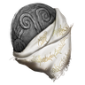 祝福鐵幣 | |
| HP 低於 [HP 上限 ×0.4] 時，對自己與我方人物施加增益效果，每秒恢復 [1 + HP 上限 ×0.005] HP，持續 50 秒。 | 一般深層 | |
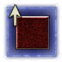 防禦成功時，恢復 HPHP Recovery From Successful Guarding | 防禦成功時，恢復 15 HP。 | 一般深層 |
| 突刺反擊成功時，能恢復 HPHP Restoration upon Thrusting Counterattack | 基本：突刺反擊成功時，恢復 [HP 上限 ×0.025] HP。+1：使出突刺反擊（於敵人攻擊判定生效期間造成的傷害）時，恢復 [HP 上限 ×0.033] HP。+1：必伴隨負面效果 | 一般：基本深層：基本、+1 |
| 基本：過去 4 秒內受到的傷害，可透過近戰攻擊、遠程攻擊與魔法、禱告造成傷害來恢復。此效果不與同類效果疊加。+1：過去 4 秒內受到的傷害，可透過近戰攻擊、遠程攻擊與魔法、禱告造成傷害來恢復。此效果的恢復量 ×1.25，且不與同類效果疊加，+2 版本除外。+2：過去 4 秒內受到的傷害，可透過近戰攻擊、遠程攻擊與魔法、禱告造成傷害來恢復。此效果的恢復量 ×1.35，且不與同類效果疊加，+1 版本除外。+1、+2：必伴隨負面效果 | 一般：基本深層：基本、+1、+2 | |
| 食用苔藥等等道具時，能恢復 HPHP restored when using medicinal boluses, etc. | 基本：使用苔藥等道具時，為使用者恢復 50 HP。+1：食用可食用道具時，為使用者恢復 80 HP。（原文註記：待核實此效果是否僅適用於苔藥。）+1：多份合成方式尚未核實 | 一般：基本深層：基本、+1 |
| 周圍陷入腐敗時，每 1.3 秒恢復 [HP 上限 ×0.0015 + 15] HP，持續 15 秒。 | 廢棄物之夜 | |
| 聖杯瓶的 HP 恢復量 ×1.1。多份合成方式尚未核實 | 深層 | |
| 戰技、魔法、禱告與道具的 FP 消耗 ×0.92。多份合成方式尚未核實相關武器、法術與戰技： | 深層 | |
| 每 5 秒恢復 1 FP。多份合成方式尚未核實 | 安定者的遺志 | |
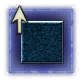 連續攻擊時，恢復 FPFP Restoration upon Successive Attacks | 連續攻擊時，恢復 [FP 上限 ×0.05] FP。多份合成方式尚未核實 | 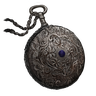 老舊懷錶 |
| 連續攻擊時，恢復 FPFP Restoration upon Successive Attacks | 連續攻擊時，恢復 [FP 上限 ×0.05] FP。多份合成方式尚未核實 | 智的暗夜 |
| 引發異常狀態發狂後，能持續恢復 FPMadness Continually Recovers FP | 引發異常狀態發狂後，每 0.5 秒恢復 1 FP，持續 25 秒。 | 魔的黑夜 |
| 引發異常狀態發狂後，能持續恢復 FPMadness Continually Recovers FP | 引發異常狀態發狂後，每 0.5 秒恢復 1 FP，持續 25 秒。 | 魔的暗夜 |
| 攻擊命中時，恢復 2 精力。 | 一般深層 | |
| +1：攻擊命中時，恢復 3 精力。 | 野獸的黑夜野獸的暗夜 | |
| 使出致命一擊時，能提升精力的恢復速度Critical Hit Boosts Stamina Recovery Speed | 基本：使出致命一擊時，使自己獲得每秒 +10 精力恢復的增益，持續 15 秒。+1：使出致命一擊時，使自己獲得精力恢復速度 +17 的增益，持續 15 秒。 | 一般：基本深層：基本、+1 |
動作
| 詞條 | 效果數值與規則 | 種類 |
|---|---|---|
| 使出致命一擊時，能獲得盧恩Critical Hits Earn Runes | 使出致命一擊時，獲得 600 盧恩。 | 一般深層 |
| 未載明數值 | 王的黑夜 | |
| 受到損傷時，武器攻擊附加 25 腐敗累積值，持續 12 秒。 | 廢棄物之夜 | |
| 防禦時，變得容易被敵人攻擊Draw enemy attention while guarding | 防禦住攻擊時，獲得 450 目標優先度，持續 4 秒。 | 一般深層 |
| 透過肢體動作「盤腿坐」，能累積發狂量表Gesture "Crossed Legs" Builds Up Madness | 未載明數值 | 魔的黑夜 |
| 透過肢體動作「盤腿坐」，能累積發狂量表Gesture "Crossed Legs" Builds Up Madness | 未載明數值 | 魔的暗夜 |
| 未載明數值 | 安定的遺志 | |
| 基本：對陷入中毒的目標，所有來源的傷害 ×1.1。+1：對陷入中毒的目標，所有來源的傷害 ×1.16。+2：對陷入中毒的目標，所有來源的傷害 ×1.2。+1、+2：必伴隨負面效果相關能力值： | 一般：基本深層：基本、+1、+2 | |
| 基本：對陷入猩紅腐敗的目標，所有來源的傷害 ×1.1。+1：對陷入猩紅腐敗的目標，所有來源的傷害 ×1.16。+2：對陷入猩紅腐敗的目標，所有來源的傷害 ×1.2。+1、+2：必伴隨負面效果相關能力值： | 一般：基本深層：基本、+1、+2 | |
| 基本：對陷入凍傷的目標，所有來源的傷害 ×1.1。+1：對陷入凍傷的目標，所有來源的傷害 ×1.16。+2：對陷入凍傷的目標，所有來源的傷害 ×1.2。+1、+2：必伴隨負面效果相關能力值： | 一般：基本深層：基本、+1、+2 | |
| 周圍人物陷入中毒、腐敗時，所有來源的傷害 ×1.12，持續 20 秒。相關能力值： | 智的黑夜 | |
| 周圍人物陷入異常狀態凍傷時，能隱藏自己的身影Frostbite in Vicinity Conceals Self | 周圍人物陷入凍傷時，隱藏自己的身影，持續 5 秒。 | 霧霾的黑夜霧霾的暗夜 |
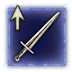 周圍陷入催眠時，提升攻擊力Sleep in Vicinity Improves Attack Power | 基本：附近的敵人或玩家（包含自己）陷入催眠時，所有來源的傷害 ×1.12，持續 20 秒。+1：附近的敵人或玩家（包含自己）陷入催眠時，所有來源的傷害 ×1.22，持續 20 秒。+1：必伴隨負面效果相關能力值： | 深層 |
| 周圍陷入發狂時，提升攻擊力Madness in Vicinity Improves Attack Power | 基本：附近的敵人或玩家（包含自己）陷入發狂時，所有來源的傷害 ×1.12，持續 20 秒。+1：附近的敵人或玩家（包含自己）陷入發狂時，所有來源的傷害 ×1.22，持續 20 秒。+1：必伴隨負面效果相關能力值： | 深層 |
出擊時的武器（戰技）
| 詞條 | 效果數值與規則 | 種類 |
|---|---|---|
| 出擊時，武器戰技改為「忍耐」※僅限能使用的武器類別Changes compatible armament's skill to Endure at start of expedition | 未載明數值限定角色： | 一般 |
| 出擊時，武器戰技改為「碎步」※僅限能使用的武器類別Changes compatible armament's skill to Quickstep at start of expedition | 未載明數值限定角色： | 一般 |
| 出擊時，武器戰技改為「風暴足」※僅限能使用的武器類別Changes compatible armament's skill to Storm Stomp at start of expedition | 未載明數值限定角色： | 一般 |
| 出擊時，武器戰技改為「決心」※僅限能使用的武器類別Changes compatible armament's skill to Determination at start of expedition | 未載明數值限定角色： | 一般 |
| 出擊時，武器戰技改為「輝劍圓陣」※僅限能使用的武器類別Changes compatible armament's skill to Glintblade Phalanx at start of expedition | 未載明數值限定角色： | 一般 |
| 出擊時，武器戰技改為「重力」※僅限能使用的武器類別Changes compatible armament's skill to Gravitas at start of expedition | 未載明數值限定角色： | 一般 |
| 出擊時，武器戰技改為「炎擊」※僅限能使用的武器類別Changes compatible armament's skill to Flaming Strike at start of expedition | 未載明數值限定角色： | 一般 |
| 出擊時，武器戰技改為「熔岩火漿」※僅限能使用的武器類別Changes compatible armament's skill to Eruption at start of expedition | 未載明數值限定角色： | 一般 |
| 出擊時，武器戰技改為「落雷」※僅限能使用的武器類別Changes compatible armament's skill to Thunderbolt at start of expedition | 未載明數值限定角色： | 一般 |
| 出擊時，武器戰技改為「雷擊斬」※僅限能使用的武器類別Changes compatible armament's skill to Lightning Slash at start of expedition | 未載明數值限定角色： | 一般 |
| 出擊時，武器戰技改為「神聖刀刃」※僅限能使用的武器類別Changes compatible armament's skill to Sacred Blade at start of expedition | 未載明數值限定角色： | 一般 |
| 出擊時，武器戰技改為「祈禱一擊」※僅限能使用的武器類別Changes compatible armament's skill to Prayerful Strike at start of expedition | 未載明數值限定角色：無賴、送葬者相關武器、法術與戰技： | 一般 |
| 出擊時，武器戰技改為「毒霧」※僅限能使用的武器類別Changes compatible armament's skill to Poisonous Mist at start of expedition | 未載明數值限定角色： | 一般 |
| 出擊時，武器戰技改為「雙吻毒蛾」※僅限能使用的武器類別Changes compatible armament's skill to Poison Moth Flight at start of expedition | 未載明數值限定角色： | 一般 |
| 出擊時，武器戰技改為「血刃」※僅限能使用的武器類別Changes compatible armament's skill to Blood Blade at start of expedition | 未載明數值限定角色： | 一般 |
| 出擊時，武器戰技改為「切腹」※僅限能使用的武器類別Changes compatible armament's skill to Seppuku at start of expedition | 未載明數值限定角色： | 一般 |
| 出擊時，武器戰技改為「寒氣凍霧」※僅限能使用的武器類別Changes compatible armament's skill to Chilling Mist at start of expedition | 未載明數值限定角色： | 一般 |
| 出擊時，武器戰技改為「凍霜踏地」※僅限能使用的武器類別Changes compatible armament's skill to Hoarfrost Stomp at start of expedition | 未載明數值限定角色： | 一般 |
| 出擊時，武器戰技改為「白影誘惑」※僅限能使用的武器類別Changes compatible armament's skill to White Shadow's Lure at start of expedition | 未載明數值限定角色： | 一般 |
| 出擊時，武器戰技改為「箭雨」※僅限能使用的武器類別Changes compatible armament's skill to Rain of Arrows at start of expedition | 未載明數值限定角色：鐵之眼相關武器、法術與戰技： | 一般 |
出擊時的武器（附加）
| 詞條 | 效果數值與規則 | 種類 |
|---|---|---|
| 未載明數值限定角色： | 一般 | |
| 未載明數值限定角色： | 一般 | |
| 未載明數值限定角色： | 一般 | |
| 未載明數值限定角色： | 一般 | |
| 未載明數值限定角色： | 一般 | |
| 未載明數值限定角色： | 一般 | |
| 未載明數值限定角色： | 一般 |
出擊時的武器（法術）
| 詞條 | 效果數值與規則 | 種類 |
|---|---|---|
| 未載明數值限定角色： | 一般 | |
| 未載明數值限定角色： | 一般 | |
| 未載明數值限定角色： | 一般 | |
| 未載明數值限定角色： | 一般 | |
| 未載明數值限定角色： | 一般 | |
| 未載明數值限定角色：復仇者相關武器、法術與戰技： | 一般 | |
| 未載明數值限定角色：復仇者相關武器、法術與戰技： | 一般 | |
| 未載明數值限定角色：復仇者相關武器、法術與戰技： | 一般 | |
| 未載明數值限定角色：復仇者相關武器、法術與戰技： | 一般 | |
| 未載明數值限定角色：復仇者相關武器、法術與戰技： | 一般 |
出擊時的道具
| 詞條 | 效果數值與規則 | 種類 |
|---|---|---|
| 出擊時，會持有「星光碎片」Starlight Shards in possession at start of expedition | 出擊時持有 2 個「星光碎片」；學者則持有 4 個。多份合成方式尚未核實 | 一般 |
| 出擊時，會持有「星光碎片」Starlight Shards in possession at start of expedition | 出擊時持有 2 個「星光碎片」；學者則持有 4 個。多份合成方式尚未核實 | 遼闊的水滴情景 |
| 出擊時，會持有「星光碎片」Starlight Shards in possession at start of expedition | 出擊時持有 2 個「星光碎片」；學者則持有 4 個。多份合成方式尚未核實 | 遼闊的水滴情景 |
| 出擊時，會持有「火焰壺」Fire Pots in possession at start of expedition | 出擊時持有 2 個「火焰壺」；學者則持有 4 個。多份合成方式尚未核實 | 一般 |
| 出擊時，會持有「魔力壺」Magic Pots in possession at start of expedition | 出擊時持有 2 個「魔力壺」；學者則持有 4 個。多份合成方式尚未核實 | 一般 |
| 出擊時，會持有「雷電壺」Lightning Pots in possession at start of expedition | 出擊時持有 2 個「雷電壺」；學者則持有 4 個。多份合成方式尚未核實 | 一般 |
| 出擊時，會持有「聖水壺」Holy Water Pots in possession at start of expedition | 出擊時持有 2 個「聖水壺」；學者則持有 4 個。多份合成方式尚未核實 | 一般 |
| 出擊時，會持有「獸骨毒飛刀」Poisonbone Darts in possession at start of expedition | 出擊時持有 8 個「獸骨毒飛刀」；學者則持有 12 個。多份合成方式尚未核實 | 一般 |
| 出擊時，會持有「結晶飛刀」Crystal Darts in possession at start of expedition | 出擊時持有 8 個「結晶飛刀」；學者則持有 12 個。多份合成方式尚未核實 | 一般 |
| 出擊時，會持有「投擲匕首」Throwing Daggers in possession at start of expedition | 出擊時持有 8 個「投擲匕首」；學者則持有 12 個。多份合成方式尚未核實 | 一般 |
| 出擊時，會持有「崩裂輝石」Glintstone Scraps in possession at start of expedition | 出擊時持有 3 個「崩裂輝石」；學者則持有 6 個。多份合成方式尚未核實 | 一般 |
| 出擊時，會持有「塊狀重力石」Gravity Stone Chunks in possession at start of expedition | 出擊時持有 2 個「塊狀重力石」；學者則持有 4 個。多份合成方式尚未核實 | 一般 |
| 出擊時，會持有「魅惑樹枝」Bewitching Branches in possession at start of expedition | 出擊時持有 2 個「魅惑樹枝」；學者則持有 4 個。多份合成方式尚未核實 | 一般 |
| 出擊時，會持有「火花香」Spark Aromatic in possession at start of expedition | 出擊時持有 2 個「火花香」；學者則持有 4 個。多份合成方式尚未核實 | 深層 |
| 出擊時，會持有「毒發噴霧」Poison Spraymist in possession at start of expedition | 出擊時持有 2 個「毒發噴霧」；學者則持有 4 個。多份合成方式尚未核實 | 深層 |
| 出擊時，會持有「鐵壺香藥」Ironjar Aromatic in possession at start of expedition | 出擊時持有 2 個「鐵壺香藥」；學者則持有 4 個。多份合成方式尚未核實 | 深層 |
| 出擊時，會持有「振奮香」Uplifting Aromatic in possession at start of expedition | 出擊時持有 2 個「振奮香」；學者則持有 4 個。多份合成方式尚未核實 | 深層 |
| 出擊時，會持有「酸蝕噴霧」Acid Spraymist in possession at start of expedition | 出擊時持有 2 個「酸蝕噴霧」；學者則持有 4 個。多份合成方式尚未核實 | 深層 |
| 出擊時，會持有「狂熱香藥」Bloodboil Aromatic in possession at start of expedition | 出擊時持有 2 個「狂熱香藥」；學者則持有 4 個。多份合成方式尚未核實 | 深層 |
| 出擊時，會持有「召咒魂鈴」Wraith Calling Bell in possession at start of expedition | 出擊時持有 1 個「召咒魂鈴」。 | 一般 |
| 出擊時，會持有「火油脂」Fire Grease in possession at start of expedition | 出擊時持有 2 個「火油脂」；學者則持有 4 個。多份合成方式尚未核實 | 一般 |
| 出擊時，會持有「魔力油脂」Magic Grease in possession at start of expedition | 出擊時持有 2 個「魔力油脂」；學者則持有 4 個。多份合成方式尚未核實 | 一般 |
| 出擊時，會持有「雷油脂」Lightning Grease in possession at start of expedition | 出擊時持有 2 個「雷油脂」；學者則持有 4 個。多份合成方式尚未核實 | 一般 |
| 出擊時，會持有「聖油脂」Holy Grease in possession at start of expedition | 出擊時持有 2 個「聖油脂」；學者則持有 4 個。多份合成方式尚未核實 | 一般 |
| 出擊時，會持有「堅盾油脂」Shield Grease in possession at start of expedition | 出擊時持有 3 個「堅盾油脂」；學者則持有 6 個。多份合成方式尚未核實 | 一般 |
| 出擊時，會持有「小型隨身包包」Small Pouch in possession at start of expedition | 未載明數值多份合成方式尚未核實 | 一般深層 |
| 出擊時，會持有「小型隨身包包」Small Pouch in possession at start of expedition | 未載明數值多份合成方式尚未核實 | 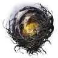 遼闊的光耀情景 |
| 出擊時，會持有「石劍鑰匙」Stonesword Key in possession at start of expedition | 出擊時持有 1 個「石劍鑰匙」。 | 一般深層 |
出擊時的道具（露滴）
| 詞條 | 效果數值與規則 | 種類 |
|---|---|---|
| 出擊時，會持有「紅結晶露滴」Crimson Crystal Tear in possession at start of expedition | 出擊時持有 1 個「紅結晶露滴」；學者則持有 2 個。多份合成方式尚未核實 | 深層 |
| 出擊時，會持有「漫紅結晶露滴」Crimsonspill Crystal Tear in possession at start of expedition | 出擊時持有 1 個「漫紅結晶露滴」；學者則持有 2 個。多份合成方式尚未核實 | 深層 |
| 出擊時，會持有「湧紅結晶露滴」Crimsonburst Crystal Tear in possession at start of expedition | 出擊時持有 1 個「湧紅結晶露滴」；學者則持有 2 個。多份合成方式尚未核實 | 深層 |
| 出擊時，會持有「藍結晶露滴」Cerulean Crystal Tear in possession at start of expedition | 出擊時持有 1 個「藍結晶露滴」；學者則持有 2 個。多份合成方式尚未核實 | 深層 |
| 出擊時，會持有「湧綠結晶露滴」Greenspill Crystal Tear in possession at start of expedition | 出擊時持有 1 個「漫綠結晶露滴」；學者則持有 2 個。多份合成方式尚未核實 | 深層 |
| 出擊時，會持有「湧綠結晶露滴」Greenburst Crystal Tear in possession at start of expedition | 出擊時持有 1 個「湧綠結晶露滴」；學者則持有 2 個。多份合成方式尚未核實 | 深層 |
| 出擊時，會持有「珍珠硬露滴」Opaline Hardtear in possession at start of expedition | 出擊時持有 1 個「珍珠硬露滴」；學者則持有 2 個。多份合成方式尚未核實 | 深層 |
| 出擊時，會持有「斑斕硬露滴」Speckled Hardtear in possession at start of expedition | 出擊時持有 1 個「斑斕硬露滴」；學者則持有 2 個。多份合成方式尚未核實 | 深層 |
| 出擊時，會持有「鉛化硬露滴」Leaden Hardtear in possession at start of expedition | 出擊時持有 1 個「鉛化硬露滴」；學者則持有 2 個。多份合成方式尚未核實 | 深層 |
| 出擊時，會持有「帶魔力破露滴」Magic-Shrouding Cracked Tear in possession at start of expedition | 出擊時持有 1 個「帶魔力破露滴」；學者則持有 2 個。多份合成方式尚未核實 | 深層 |
| 出擊時，會持有「帶火破露滴」Flame-Shrouding Cracked Tear in possession at start of expedition | 出擊時持有 1 個「帶火破露滴」；學者則持有 2 個。多份合成方式尚未核實 | 深層 |
| 出擊時，會持有「帶雷破露滴」Lightning-Shrouding Cracked Tear in possession at start of expedition | 出擊時持有 1 個「帶雷破露滴」；學者則持有 2 個。多份合成方式尚未核實 | 深層 |
| 出擊時，會持有「帶聖破露滴」Holy-Shrouding Cracked Tear in possession at start of expedition | 出擊時持有 1 個「帶聖破露滴」；學者則持有 2 個。多份合成方式尚未核實 | 深層 |
| 出擊時，會持有「岩刺破露滴」Stonebarb Cracked Tear in possession at start of expedition | 出擊時持有 1 個「岩刺破露滴」；學者則持有 2 個。多份合成方式尚未核實 | 深層 |
| 出擊時，會持有「大刺破露滴」Spiked Cracked Tear in possession at start of expedition | 出擊時持有 1 個「大刺破露滴」；學者則持有 2 個。多份合成方式尚未核實 | 深層 |
| 出擊時，會持有「連刺破露滴」Thorny Cracked Tear in possession at start of expedition | 出擊時持有 1 個「連刺破露滴」；學者則持有 2 個。多份合成方式尚未核實 | 深層 |
| 出擊時，會持有「細枝破露滴」Twiggy Cracked Tear in possession at start of expedition | 出擊時持有 1 個「細枝破露滴」；學者則持有 2 個。多份合成方式尚未核實 | 深層 |
| 出擊時，會持有「風結晶露滴」Windy Crystal Tear in possession at start of expedition | 出擊時持有 1 個「風結晶露滴」；學者則持有 2 個。多份合成方式尚未核實 | 深層 |
| 出擊時，會持有「紅泡狀露滴」Crimson Bubbletear in possession at start of expedition | 出擊時持有 1 個「紅泡狀露滴」；學者則持有 2 個。多份合成方式尚未核實 | 深層 |
| 出擊時，會持有「紅漩泡狀露滴」Crimsonwhorl Bubbletear in possession at start of expedition | 出擊時持有 1 個「紅漩泡狀露滴」；學者則持有 2 個。多份合成方式尚未核實 | 深層 |
| 出擊時，會持有「珍珠泡狀露滴」Opaline Bubbletear in possession at start of expedition | 出擊時持有 1 個「珍珠泡狀露滴」；學者則持有 2 個。多份合成方式尚未核實 | 深層 |
| 出擊時，會持有「爆裂結晶露滴」Ruptured Crystal Tear in possession at start of expedition | 出擊時持有 1 個「爆裂結晶露滴」；學者則持有 2 個。多份合成方式尚未核實 | 深層 |
環境
| 詞條 | 效果數值與規則 | 種類 |
|---|---|---|
| 能顯示地圖上隱藏寶藏的位置Treasure marked upon map | 未載明數值 | 一般深層 |
| 在出擊期間，減少於商店購物時所需的盧恩Rune discount for shop purchases while on expedition | 於商店購物時所需的盧恩減少 10%。 | 一般深層 |
| 在出擊期間，大幅減少於商店購物時所需的盧恩Huge rune discount for shop purchases while on expedition | 於商店購物時所需的盧恩減少 20%。 | 魔的黑夜 |
隊伍成員
| 詞條 | 效果數值與規則 | 種類 |
|---|---|---|
| 增加自己與我方人物獲得的盧恩Increased rune acquisition for self and allies | 自己與我方人物從敵人獲得的盧恩 ×1.035。多份合成方式尚未核實 | 一般深層 |
| 每 1 秒對周圍我方人物（bullet 判定半徑 10）施加增益，使精力恢復速度每秒 +4，持續 1 秒。 | 一般深層 | |
| 聖杯瓶改為為自身恢復 [HP 上限 ×0.5] HP，並為周圍我方人物恢復 [HP 上限 ×0.3] HP。搭配「使用聖杯瓶時，改為緩慢恢復」時，改為：自身於使用時恢復 [HP 上限 ×0.1] HP，之後 8 秒內每 0.1 秒恢復 [HP 上限 ×0.01] HP；周圍我方人物於使用時恢復 [HP 上限 ×0.05] HP，之後 4 秒內每 0.1 秒恢復 [HP 上限 ×0.01] HP。搭配 Unifying Fate 時，聖杯瓶另為自身恢復 [FP 上限 ×0.3] FP，並為周圍我方人物恢復 [FP 上限 ×0.15] FP。（原文註記：待測試數值依使用者的 HP 上限或接受者的 HP 上限計算） | 一般深層 | |
| 打倒敵人時，除了自己恢復周圍我方人物的 HPDefeating enemies restores HP for allies but not for self | 打倒敵人時，為周圍我方人物恢復 20 HP（判定半徑 15）。 | 一般深層 |
| 道具效用能擴及我方人物Items confer effect to all nearby allies | 使用星光碎片、苔藥或食物類消耗品時，對周圍我方人物（bullet 判定半徑 15）施加對應的增益。（原文註記：待記錄具體增益） | 一般深層 |
查證限制
- 耐力 +3 的精力增量：Eldenpedia 的遺物效果分頁與效果總表數值不同，表格並列兩者。遊戲參數中
 追蹤者等級 1→2 的耐力為 3→6；角色頁依參數中隨能力值線性成長的曲線（CalcCorrectGraph 104）算出的精力上限為 54→60，與遺物效果分頁一致。該曲線已與 Eldenpedia 能力值表核對，但參數沒有指明遺物增加的耐力也套用同一曲線，且尚未在本機實測該遺物，因此仍不判定。
追蹤者等級 1→2 的耐力為 3→6；角色頁依參數中隨能力值線性成長的曲線（CalcCorrectGraph 104）算出的精力上限為 54→60，與遺物效果分頁一致。該曲線已與 Eldenpedia 能力值表核對，但參數沒有指明遺物增加的耐力也套用同一曲線，且尚未在本機實測該遺物，因此仍不判定。 - 強韌度 +1／+2／+3 的承受削韌：Eldenpedia 遺物效果分頁的數值與遊戲參數不同；本表採遊戲參數（SpEffectParam 的 toughnessDamageCutRate），與遺物資料集及 Relics.pro 遺物圖鑑一致。
- 詞條的詳細說明是社群整理的英文說明譯文，不是遊戲內文字，也未逐條實測。原文的待核實註記譯為「（原文註記：……）」；原文與詞條名稱矛盾處照譯並標「（原文如此）」。原文數值、物品或地點與遊戲參數不符時（例如改版後社群資料未更新的數值），改依參數重寫該條說明，不保留原文數字。
- 藍色表示同一詞條可在多個遺物上同時生效，且多份數值相加；多份以倍率相乘或合成方式尚未核實時，小字會另外標示。目前多數可疊加詞條的合成方式尚未核實。遺物資料集未載明自身可否疊加時，採社群遺物數值試算表或 Fextralife 明確寫出的說法，兩者不同時並列為來源分歧；兩者都沒寫明的維持尚未核實。
- 固定遺物專屬詞條只列出遊戲參數中掛在具名遺物上的效果；沒有社群詳細說明時，依遊戲參數撰寫說明，參數無法明確給出數值者標示「未載明數值」。
- 部分詞條（例如異常狀態累積類負面效果）在 Eldenpedia 沒有與遊戲相同框線的授權圖片，圖示欄留空，不以其他圖片替代。
- 遊戲參數為 1.03.5 原版快照；遊戲文字與社群資料集各有擷取版本，詳見首頁的資料來源。版本更新後須重新核對。
- 引用頁面的查閱日期不代表它適用當前所有補丁。需要精確配裝計算時，須核對效果、遊戲版本及相同條件下的實測。